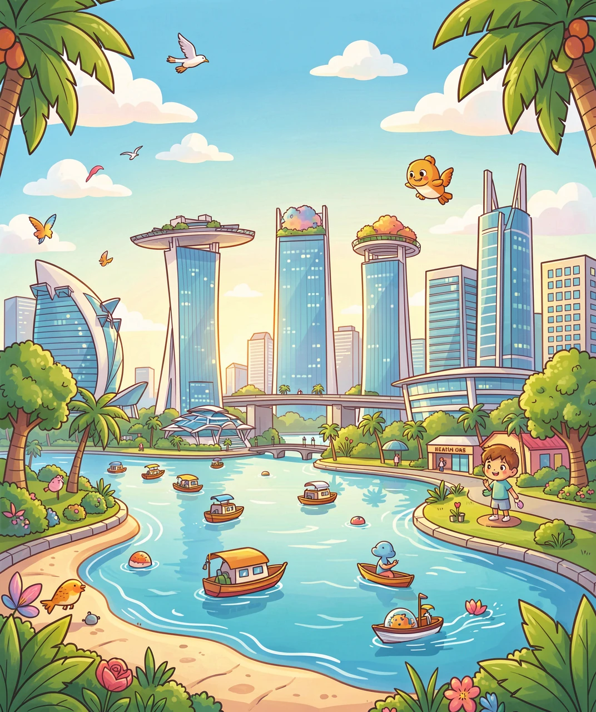
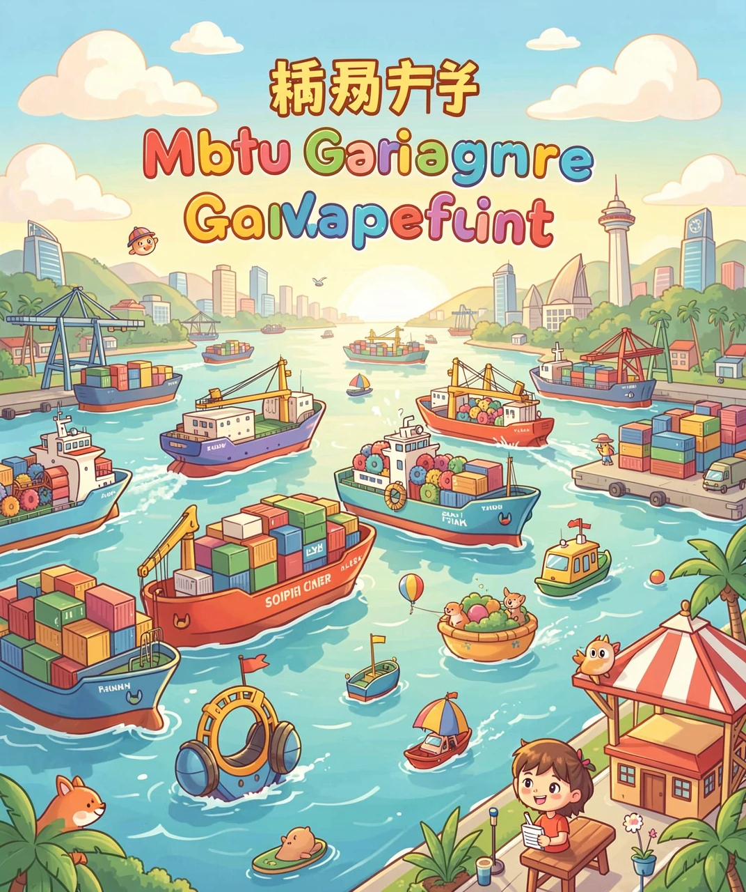
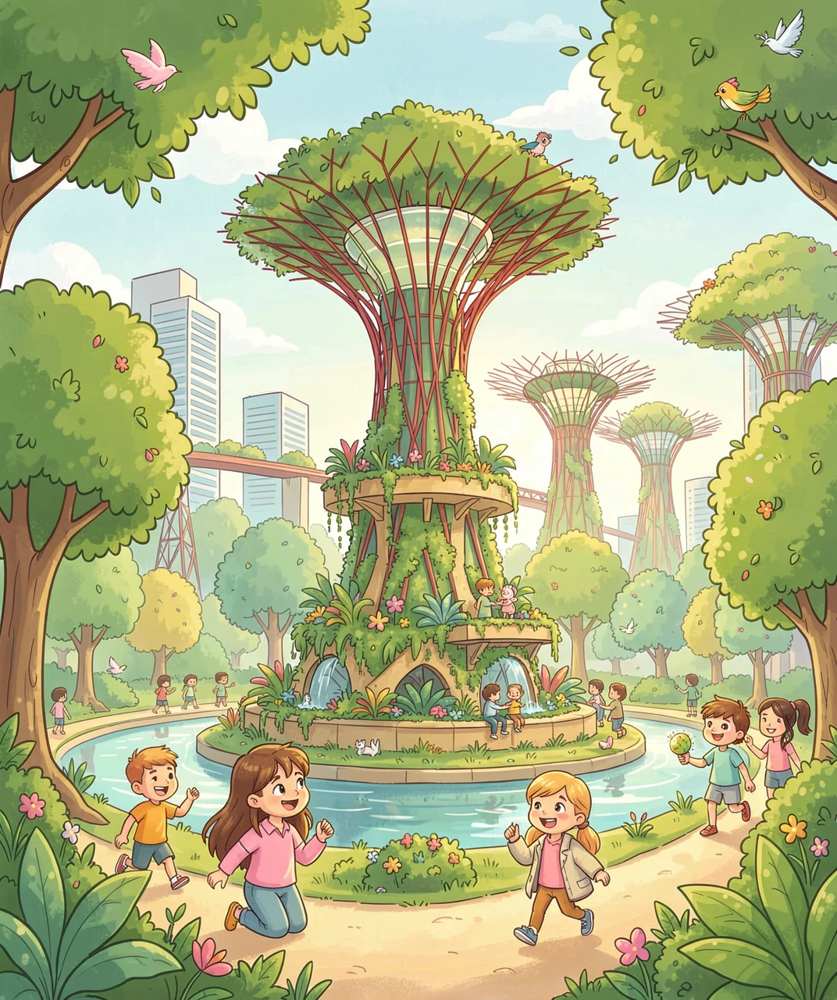
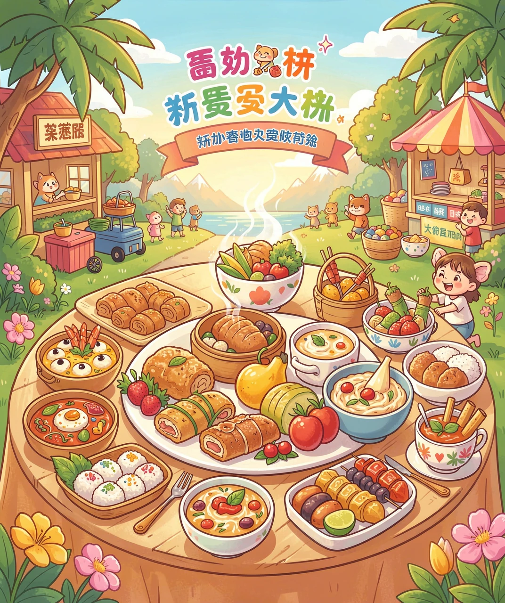
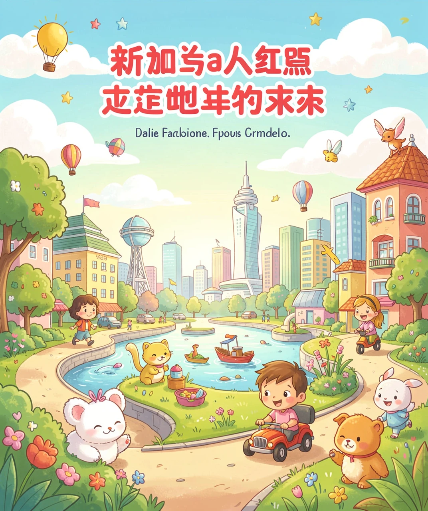

一个「城市」变成的国家
如果让你在世界地图上找新加坡，你可能要睁大眼睛，拿上放大镜，才能找到它——因为它实在太小了，只有一个小红点那么大。
新加坡是一个很特别的地方：它既是一个国家，也是一座城市。也就是说，整个国家就是一座城市，城市有多大，国家就有多大。它的面积只有大约 700 多平方公里，还没有我们国家的一个普通城市大，甚至比很多县还要小。
更神奇的是，新加坡的旁边就是马来西亚，中间只隔着一道很窄的海峡。它就在马六甲海峡的入口处——那里是亚洲和欧洲之间船只往来的「大门口」，地理位置特别重要。所以别看它小，它可是世界闻名的「咽喉要道」。

几百年前，新加坡还只是一个小小的渔村，住着一些打鱼的人。那时候，谁也没想到，这个小渔村后来会变成今天这么发达的国家。
转折发生在 1819 年。那一年，一位叫莱佛士的英国人来到了这里。他一眼就看中了这个地方——因为新加坡正好卡在马六甲海峡的入口，是来往船只的必经之地。于是他在这里建起了港口，让新加坡变成了一个「自由港」，各国的商船都可以自由地停靠、做买卖。
慢慢地，越来越多的人从世界各地来到这里：有华人、马来人、印度人，还有欧洲人。他们一起做生意、盖房子、开店铺，小小的渔村一天天热闹起来，变成了一座繁华的城市。

如果你坐飞机降落在新加坡，从窗户往下看，一定会惊讶：这座城市怎么到处都是绿色的？街道边、屋顶上、高楼里，到处都种满了树和花草。
这是因为新加坡有个响亮的外号，叫「花园城市」。政府花了很多心思，让城市和自然长在一起：路两边种满大树，高楼的天台上建起花园，连机场里都有一座巨大的室内森林和瀑布。
为什么要这么做呢？因为新加坡天气炎热，多一片树荫，就多一份清凉；更重要的是，绿色植物能让空气更干净，让人们生活得更舒服。所以新加坡人常说：我们要把整座城市，都变成一座大花园。

走进新加坡的大街小巷，你会发现一个特别有意思的现象：这里的人说着不同的语言，吃着不同的美食，却相处得特别融洽。
新加坡是一个多民族的国家，主要有华人、马来人、印度人，还有其他各族群。大家有不同的节日：华人过春节、马来人过开斋节、印度人过屠妖节，这些节日都是全国放假的公共假期，大家一起庆祝。
为了让大家都懂彼此，新加坡有四种官方语言，分别是英语、华语、马来语和泰米尔语。走在路上，你会看到招牌上同时写着好几种文字。不同民族的美食也在这里「开会」——海南鸡饭、印度煎饼、马来沙爹串，都在同一条美食街上飘香。所以新加坡就像一个「文化大拼盘」，多姿多彩。

今天的新加坡，早就不是当年那个小渔村了。它没有很多土地，也没有很多自然资源，却靠着自己的聪明才智，变成了亚洲最富裕、最发达的国家之一。
新加坡人的「秘诀」是：既然地方小、资源少，那就靠「人」和「智慧」。他们大力发展教育，让每个人都学到本领；他们建起了世界一流的港口、机场和金融中心，把全世界的人和生意都吸引过来。他们还特别守规矩、爱干净，让整座城市井井有条。
新加坡的故事告诉我们：一个地方大不大、有没有资源，并不是决定未来的唯一因素。只要肯努力、动脑筋、团结一心，一个小小的「红点」，也能在世界上闪闪发光。

（答案：B、B、B、D、B。你都答对了吗？）